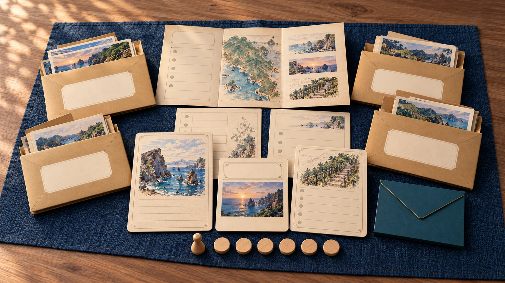

R1접수한 제보
첫날의 장소가 다릅니다.
“첫날 하람을 만난 곳은 저동이었어요. 원고를 다시 봐 주세요.”
전시 준비실에 도착한 메모입니다. 원본 항해일지 대신 네 장소의 원고 복사본이 남아 있습니다.
함께 읽고 풀어 가는 기록 미스터리
울릉도
봉투 하나를 고르고, 세 장의 자료를 읽으세요.
서로의 근거를 모아 잘못된 여행 안내문을
함께 고치는 게임입니다.
봉투를 열고 자료를 옮기며, 기록지에 직접 적습니다.
원안 기획 손예령, 한효원
“첫날 하람을 만난 곳은 저동이었어요. 원고를 다시 봐 주세요.”
전시 준비실에 도착한 메모입니다. 원본 항해일지 대신 네 장소의 원고 복사본이 남아 있습니다.
삼선암 → 저동 → 태하 → 나리분지
“기록자 하람이 방문한 순서입니다.”
인쇄하기 전, 이 안내문의 순서와 설명이 맞는지 확인해야 합니다.
원고와 표찰, 작업 메모를 나란히 놓고 읽습니다.
찾은 날짜와 번호는 공동 복원판에 나눠 적으세요.

이야기의 시작
울릉도 여행 전시를 준비하던 중 항해일지 원본이 사라졌습니다. 남은 복사본과 편집 자료를 살펴보니, 안내문에 적힌 방문 순서가 어딘가 이상합니다.
어느 문장을 믿어야 할까요? 자료를 나누어 읽고, 서로 찾은 근거를 맞춰 보세요.
시작 전 정리 연습
두 자료를 나란히 읽어 보세요.
이 글을 쓴 여행 날짜는 무엇일까요?
이곳의 숫자와 제목은 연습용입니다.
본 게임의 정답은 공개하지 않습니다.
여행 6일차
오후에는 작은 전시실에 들렀다.
걸으며 적은 글을 한데 묶었다.
이 글을 읽는 자리
실물 구성으로 보는 진행
지도에서 봉투를 고르고,
원고를 펼쳐 복원판에 놓는 과정을
실제 구성으로 살펴보세요.
장소 봉투 4개, 공용 말 1개, 힌트 토큰 6개를 준비합니다.
장소는 어느 순서로 조사해도 됩니다. 공용 말을 옮기고 봉투를 열어 보세요.
읽기, 기록, 대조, 설명 역할을 나누고, 장소가 바뀌면 교대합니다.
자료에 붙은 이름을 확인하세요. 여행의 날짜와 전시장의 자리는 다른 정보입니다.
힌트 한 단계에 토큰 1개. 여섯 개를 다 써도 무료 도움으로 끝까지 이어갑니다.
날짜와 전시칸, 표제를 따로 적고 근거 자료 번호를 함께 남깁니다.
네 장소를 조사한 뒤 팀의 복원안을 먼저 기록합니다. 최종 확인 봉투는 그다음에 엽니다.
처음 맞히면 독립 복원, 고쳐 완성하면 재검토 복원. 개인 승자나 탈락자는 없습니다.
어느 봉투부터 열어 볼까요?
장면을 눌러 함께할 조사를 살펴보세요.
테이블에 놓이는 것들
게임 정보
시작 전에 궁금한 점
네. 필요한 기록은 장소 봉투 안에 있습니다. 원고의 날짜와 자료의 제목을 대조하며, 읽은 문장을 근거로 팀의 답과 이유를 적으면 됩니다.
자료를 다시 읽고 답을 고칠 수 있습니다. 힌트 토큰 여섯 개를 다 사용한 뒤에도 무료 도움으로 계속합니다. 팀원 모두 끝까지 복원을 마칩니다.
진행자는 필요 없습니다. 팀의 답을 적은 뒤 가려 둔 확인 카드와 직접 비교합니다. 온라인 테이블과 인쇄물에 같은 규칙서와 해설이 들어 있습니다.
인쇄 구성품과 봉투 다섯 개, 공용 말 하나, 필기구를 준비합니다. 힌트 토큰은 출력하거나 동전 여섯 개로 대신할 수 있습니다.
첫 봉투는 원하는 곳부터
 저동 / 삼선암 / 태하 / 나리분지
저동 / 삼선암 / 태하 / 나리분지